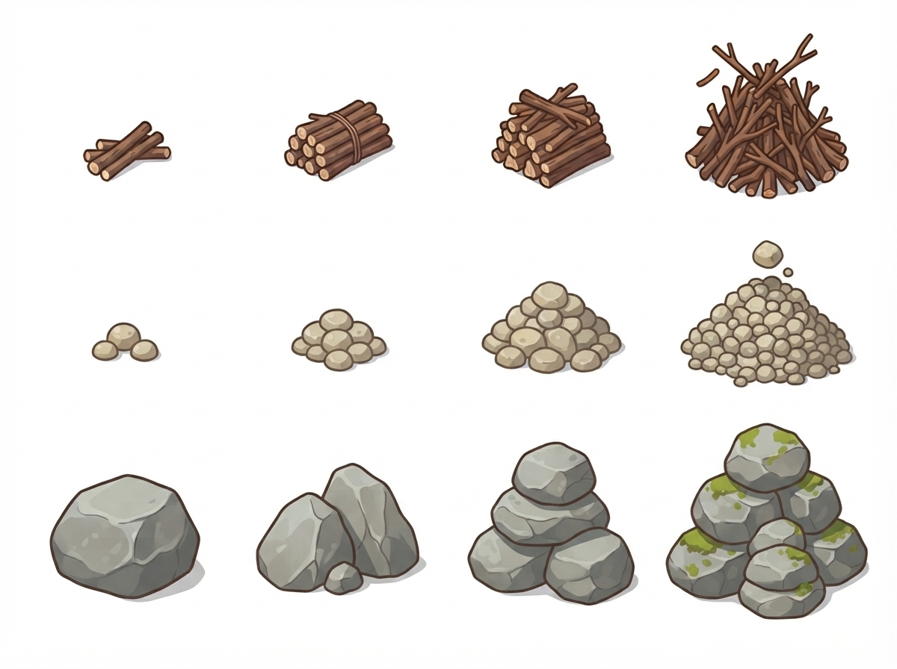
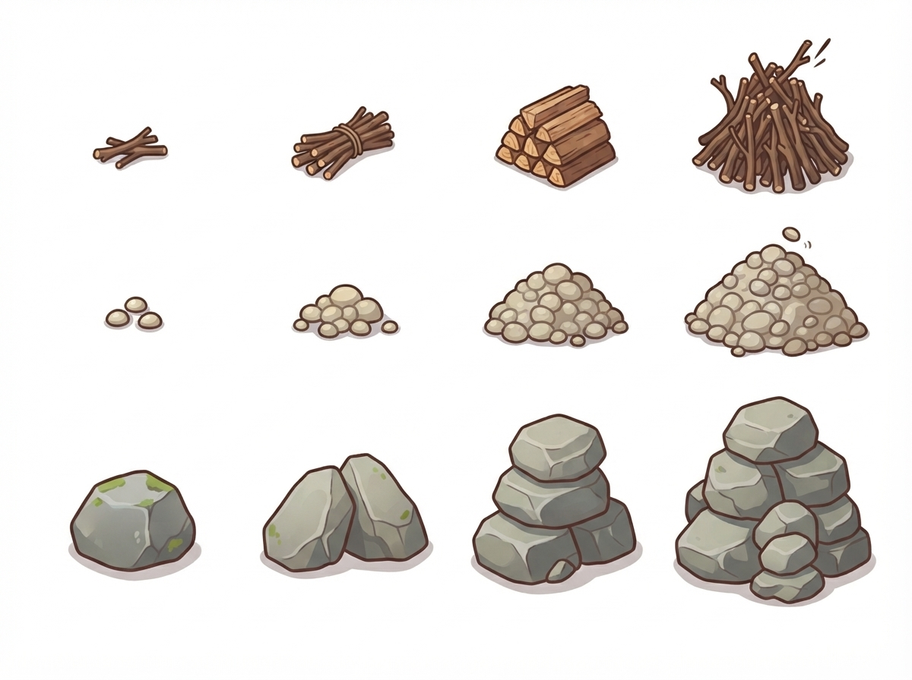
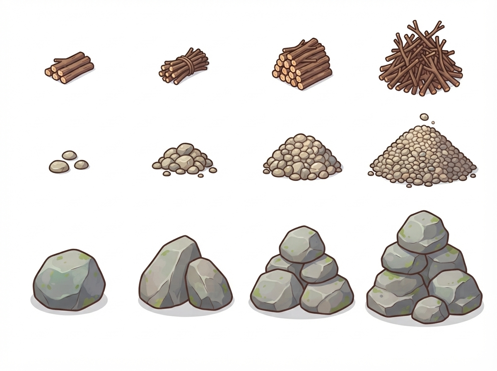

Green frame = the pick used in the game. To swap: python3 .claude/skills/openart-pictures/fetch.py pick sheet54-piles <version>, then import again.



Sprite sheet for a children's farming game, in exactly the art style of reference image 1 (use it only for the style: outlines, colours, shading): bright, friendly mobile-game cartoon, thick rounded dark outlines, flat colours with simple cel shading, chunky cute proportions, three-quarter top-down view (isometric, like Hay Day), each object with a small soft shadow under it. Plain pure white background. No text, no letters, no numbers, no labels, no frames, no grid lines. Twelve separate objects in a tidy grid of 3 rows and 4 columns, evenly spaced with clear white space between them, none touching or overlapping. Each row shows the same pile growing from left to right in four sizes: tiny, small, medium, big and heaped high. Row 1: a pile of brown wooden sticks and thin branches, neatly stacked like firewood kindling: (1) three sticks, (2) a small bundle of about eight sticks, (3) a knee-high stack, (4) a big tall heap of sticks with a few sticking out at the top. Row 2: a pile of small round grey-beige fieldstones, pebble to fist size: (1) three small stones, (2) a small heap, (3) a medium mound, (4) a big heaped mound of small stones with one about to roll off the top. Row 3: a pile of big heavy grey boulders with a little moss: (1) one big rock, (2) two big rocks leaning together, (3) four big rocks stacked, (4) a big stack of six or seven boulders. All piles drawn at the same scale and from the same angle, so the four sizes of one row clearly belong together.